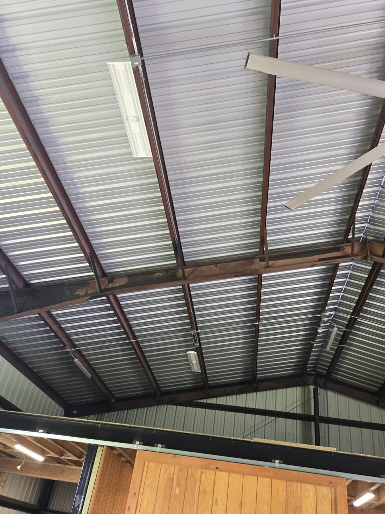
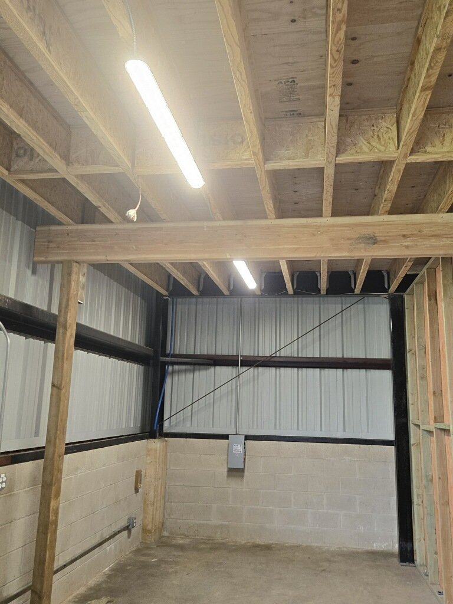

Repairs that blend in with your existing knockdown, orange peel or custom texture.
Texture is often the detail that makes a repair stand out. We focus on matching the pattern, density and finish so your patch does not look like a patch once it is painted.



Homes and buildings across Oahu have a mix of smooth, light texture and heavier patterns. We work to match what you already have so new work blends with old.
One of the most common textures in modern homes. We match the size of the pattern and the way it lays down on the surface before paint.
Subtle textures that hide minor imperfections without looking heavy. Matching density and spray pattern makes the repair disappear.
Older homes and custom builds sometimes have unique patterns. We use sample areas and test sections to get as close as possible.
A good match starts before any mud or texture is applied. We look at your existing walls and ceilings in natural light and work backward from there.
We feather repairs wider than the original patch so the transition between old and new material is not visible.
When needed, we create small sample areas to check pattern size and thickness, then adjust before finishing the full repair.
We leave the surface dry and ready for primer and paint so your painter can finish the job without extra prep.
A few questions homeowners ask when they want a repair to blend in as much as possible.
In many cases the repair is very hard to find once painted. In older homes with many layers of paint, the goal is a repair that does not draw attention.
Yes. We match texture on walls, ceilings and soffits so everything looks consistent once the paint is dry.
Often yes. We study the existing pattern and do our best to match. If there are limits, we will explain them before we start work.
Share where the repair is located and what type of texture you have. Photos are helpful if you can send them.